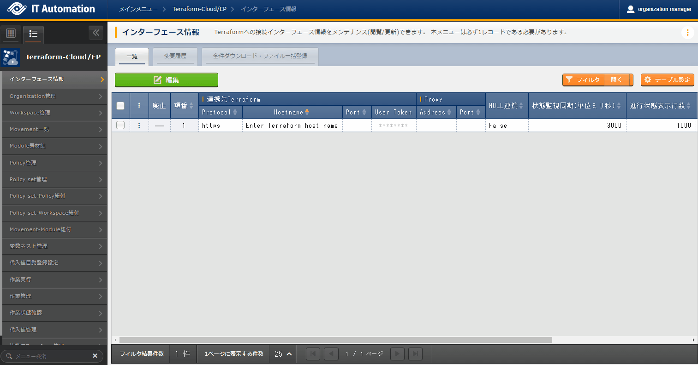
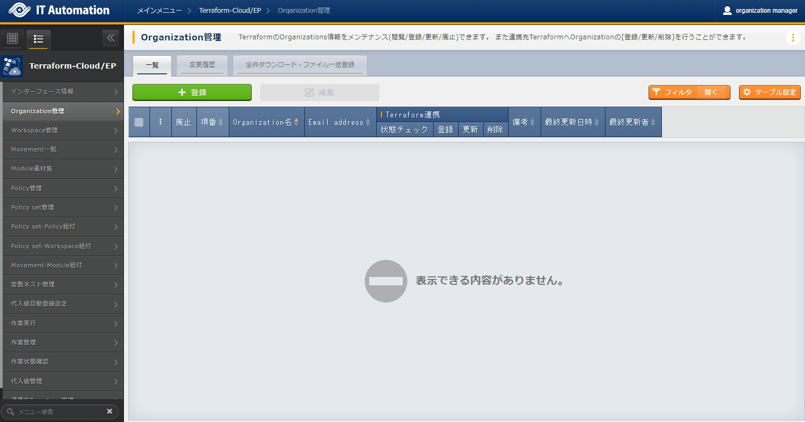
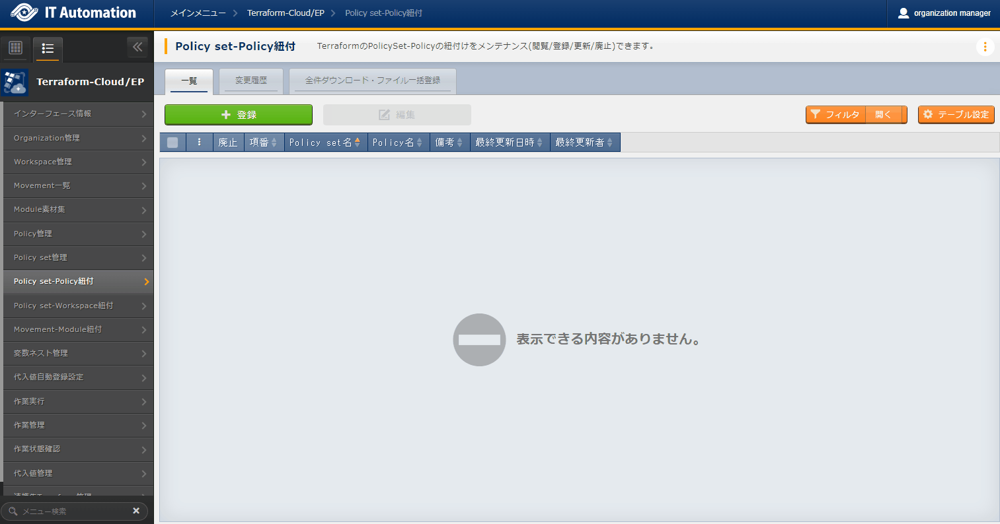
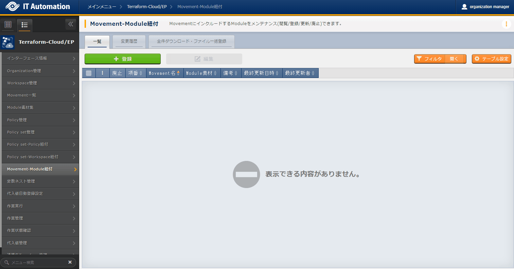

2. Terraform Cloud/EP driver¶
2.1. はじめに¶
2.2. コンソールメニュー構成¶
2.2.1. メニュー/画面一覧¶
- 基本コンソールのメニューTerraform Cloud/EP driverで利用する基本コンソールのメニュー一覧を以下に記述します。
表 2.73 基本コンソール メニュー/画面一覧¶ No
メニューグループ
メニュー/画面
説明
1
基本コンソール
オペレーション一覧
オペレーション一覧をメンテナンス(閲覧/登録/更新/廃止)できます。
- Terraform Cloud/EP driverのメニューTerraform Cloud/EP driverのメニュー一覧を以下に記述します。
表 2.74 Terraform Cloud/EP driver メニュー/画面一覧¶ No
メニューグループ
メニュー・画面
説明
1
Terraform Cloud/EP
インターフェース情報
ITAと連携するTerraformの情報を管理します。
2
Organization管理
Terraformで利用するOrganizationの情報を管理します。
3
Workspace管理
Terraformで利用するWorkspaceの情報を管理します。
4
Movement一覧
Movementの一覧を管理します。
5
Module素材集
Moduleファイルを管理します。
6
Policy管理
Policyファイルを管理します。
7
Policy set管理
Policy Setを管理します Policy SetはPolicyおよび。Workspaceと紐づけることで、作業実行時に対象のWorkspaceに対してPolicyを有効にします。
8
Policy set-Policy紐付
PolicySetとPolicyの紐付けを管理します。
9
Policy set-Workspace紐付
PolicySetとWorkspaceの紐付けを管理します。
10
Movement-Module紐付
MovementとModule素材の関連付けを管理します。
11
変数ネスト管理
Module素材集で登録したtfファイルで定義されている変数のタイプがlist,setかつ、その変数の中でlist,set,tuple,objectが定義されている場合、メンバー変数の最大繰返数を管理します。
12
代入値自動登録設定
パラメータシートのメニューに登録されているオぺレーション毎の項目や値を紐付けるMovementと変数を管理します。
13
作業実行
作業実行するMovementとオペレーションを選択し実行を指示します。
14
作業管理
作業実行履歴を管理します。
15
作業状態確認
作業実行状態を表示します。
16
代入値管理
変数の代入値を管理します。
17
連携先Terraform管理
ITAと連携されているTerraformに登録されているOrganization, Workspace,Policy,PolicySetの一覧表示および削除をすることができます。
18
Module-変数紐付(※1)
Module変数とModule素材の紐付を管理します。
19
メンバー変数管理(※1)
メンバー変数を管理します。
20
Movement-変数紐付(※1)
Movmentと変数の紐付を管理します。
21
Movement-メンバー変数紐付(※1)
Movmentとメンバー変数の紐付を管理します。
注釈
※1 非表示メニューは、内部機能でデータの登録・更新を行うメニューです。Terraform Cloud/EP driver機能をインストールした状態では表示されないメニューに設定されています。非表示メニューを表示するには、 で各メニューの復活処理を行います。詳細は 管理コンソール を参照してください。
2.3. 利用手順¶
2.3.1. Terraform Cloud/EP 作業フロー¶

作業フロー詳細と参照先
- Organizationの登録と連携Terraformで利用するOrganizationの情報を登録し、Terraformとの連携を行います。詳細は Organization管理 を参照してください。
- Policy setにWorkspaceを紐付け（必要に応じて実施）Policy setとWorkspaceの紐付けを登録します。詳細は PolicySet-Workspace紐付 を参照してください。
- パラメータシートの作成（必要に応じて実施）パラメータシート作成の「パラメータシート定義・作成」の画面から、作業対象サーバの設定に使用するデータを登録するためのパラメータシートを作成します。Module素材に定義した変数に具体値を設定する際に必要となります。詳細は パラメータシート作成機能 を参照してください。
- パラメータシートにデータを登録（必要に応じて実施）入力用メニューグループの前項で作成したパラメータシート画面から、作業対象サーバの設定に使用するデータを登録します。Module素材に定義した変数に具体値を設定する際に必要となります。詳細は パラメータシート作成機能 を参照してください。
- 代入値自動登録設定（必要に応じて実施）代入値自動登録設定の画面から、パラメータシートに登録されているオペレーション毎の項目の設定値と、Movementの変数を紐付けます。Module素材に定義した変数に具体値を設定する際に必要となります。詳細は 代入値自動登録設定 を参照してください。
- 作業状態確認作業状態確認の画面から、実行した作業の状態がリアルタイムで表示されます。また、作業の緊急停止や、実行ログ、エラーログを監視することができます。詳細は 作業状態確認 を参照してください。
2.4. Policyの適用¶
2.4.1. Policy/PolicySet/Workspaceの紐付けについて¶

2.5. 機能・操作方法説明¶
2.5.1. 基本コンソール¶
オペレーション一覧¶

図 2.34 サブメニュー画面（オペレーション一覧）¶
2.5.2. Terraform Cloud/EP メニュー¶
インターフェース情報¶
- では、ITAと連携するTerraformの情報をメンテナンス（閲覧/更新）することができます。連携対象となるTerraformのHostnameと、TerraformのUserが発行したUserTokenが必要となります。

図 2.35 サブメニュー画面（インタフェース情報）¶
- 編集 ボタンより、インターフェース情報の登録を行います。
 図 2.36 登録画面（インタフェース情報）¶
- インタフェース情報画面の項目一覧は以下のとおりです。インタフェース情報が未登録または、複数レコード登録されている状態で作業実行した場合、作業実行は想定外エラーとなります。
表 2.75 登録画面項目一覧（インタフェース情報）¶ 項目
説明
入力必須
入力方法
制約事項
連携先Terraform
Protocol
ITAが連携する対象であるTerraformのプロトコルを http/https どちらを入力します。通常httpsとなります。
○
手動入力
ー
Hostname
ITAが連携する対象であるTerraformのHostnameを入力します。
○
手動入力
最大長256バイト
Port
ITAが連携する対象であるTerraformのPortを入力します。 通常空欄となります。
ー
手動入力
最小値1 最大値65535
User Token
Terraformの UserSettings より発行したUser Tokenを入力します。
User Tokenの発行方法は構成・構築ガイド Terraform Cloud/EP の「初期設定」を参照してください。
ー
手動入力
最大長1024バイト
Proxy
Address
プロキシサーバのアドレスを入力します。 ITAがプロキシ環境下にある場合、Terraformまでの疎通のために設定が必要な場合があります。
ー
手動入力
ー
Port
プロキシサーバのポートを入力します。
ー
手動入力
ー
NULL連携
代入値自動登録設定でパラメータシートの具体値がNULL(空白)の場合に、代入値管理への登録をNULL(空白)の値で行うか設定します。代入値自動登録設定メニューの「NULL連携」が空白の場合この値が適用されます。
○
リスト選択
ー
状態監視周期（単位ミリ秒）
「作業状態確認」表示されるログのリフレッシュ間隔を入力します。通常は1000ミリ秒程度が推奨値です。
○
手動入力
最小値1000ミリ秒
進行状態表示桁数
「作業状態確認」での進行ログ・エラーログの最大表示行数を入力します。
ステータスが[未実行]、[準備中]、[実行中]、[実行中(遅延)]の場合、指定した行数でログを出力します。
ステータスが[完了]、[完了(異常)]、[想定外エラー]、[緊急停止]、[未実行(予約)]、[予約取消]の場合、指定した行数ではなくすべてのログを出力します。
環境毎にチューニングを要しますが、通常は1000行程度が推奨値です。
○
手動入力
ー
備考
自由記述欄です。
ー
手動入力
最大長4000バイト
{kind=link}
Organization管理¶
- では、Terraformで利用するOrganizationについてのメンテナンス（閲覧/登録/更新/廃止）を行います。また、ITAに登録したOrganizationをTerraformへの連携（登録/更新/削除）をすることができます。

図 2.37 サブメニュー画面（Organization管理）¶
- ＋ 登録 ボタンより、Organization情報の登録を行います。
 図 2.38 登録画面（Organization管理）¶
- Organizationを「登録」した後、「状態チェック」ボタンをクリックすると、「インターフェース情報」 に登録した連携先Terraformへの連携状態を確認できます。カラムグループ「Terraform連携」の「登録」「更新」「削除」ボタンをクリックすることで、連携先Terraformに対しOrganizationの登録/更新/削除が実行されます。OrganizationがTerraformに連携（登録）されていない状態で作業実行した場合、作業実行は想定外エラーとなります。「6.2.1インターフェース情報」で登録した「Hostname」および「UserToken」に誤りがあると、Terraformとの連携が失敗し、連携状態に以下のメッセージが表示されます。『Terraformとの接続に失敗しました。インターフェース情報を確認して下さい。』

図 2.39 Terraform連携（Organization管理）¶
- Organization管理画面の項目一覧は以下のとおりです。
表 2.76 登録画面項目一覧（Organization管理）¶ 項目
説明
入力必須
入力方法
制約事項
Organization名
Organizationの名前を入力します。
半角英数字と記号 _ -（アンダーバーとハイフン）のみ利用可能です。
○
手動入力
最大長40バイト
Email address
OrganizationのEmail addressを入力します。
○
手動入力
最大長128バイト
Terraform連携
状態チェック
対象のOrganizationと連携先Terraformとの連携状態を。チェックします。
ボタン押下後、ポップアップメッセージにて状態が表示されます。
ー
ボタン
ー
登録
連携先TerraformへOrganizationの登録を実行するボタンです。
ー
ボタン
ー
更新
連携先Terraformに登録済みのOrganizationに対し、Email addressに変更があった場合に更新を実行するボタンです。
ー
ボタン
ー
削除
連携先Terraformに登録済みのOrganizationの削除を実行するボタンです。
※削除したOrganizationは元に戻すことができません。また、Organization配下にあるWorkspaceも削除されます。
ー
ボタン
ー
備考
自由記述欄です。
ー
手動入力
最大長4000バイト
{kind=link}
Workspace管理¶
- では、Terraformで利用するWorkspaceについてのメンテナンス（閲覧/登録/更新/廃止）を行います。また、ITAに登録したWorkspaceをTerraformへの連携（登録/更新/削除）とリソース削除（terraform destroy）を実行することができます。

図 2.40 サブメニュー画面（Workspace管理）¶
- ＋ 登録 ボタンより、Workspace情報の登録を行います。

図 2.41 登録画面（Workspace管理）¶
- Workspaceを「登録」した後、「状態チェック」ボタンをクリックすると、「インターフェース情報」 に登録した連携先Terraformへの連携状態を確認できます。カラムグループ「Terraform連携」の「登録」「更新」「削除」ボタンをクリックすることで、連携先Terraformに対しWorkspaceの登録/更新/削除が実行されます。WorkspaceがTerraformに連携（登録）されていない状態で作業実行した場合、作業実行は想定外エラーとなります。「6.2.1インターフェース情報」で登録した「Hostname」および「UserToken」に誤りがあると、Terraformとの連携が失敗し、連携状態に以下のメッセージが表示されます。『Terraformとの接続に失敗しました。インターフェース情報を確認して下さい。』また、選択したOrganizationがTerraformに連携（登録）されていない場合も同様のメッセージが表示されます。

図 2.42 Terraform連携（Workspace管理）¶
- 「リソース削除」ボタンをクリックすると「作業状態確認」に遷移し、対象のWorkspaceに対してリソース削除(terraform destroy)が実行されます。
- Workspace管理画面の項目一覧は以下のとおりです。
表 2.77 登録画面項目一覧（Workspace管理）¶ 項目
説明
入力必須
入力方法
制約事項
Organization名
「Organization管理」にて登録したOrganization名を選択します。
○
リスト選択
最大長40バイト
Workspace名
Workspaceの名前を入力します。
半角英数字と記号 _ -（アンダーバーとハイフン）のみ利用可能です。
○
手動入力
最大長90バイト
Terraform version
Terraformのバージョンを入力します。空欄の場合は連携（登録）時に最新のバージョンが自動的に適用されます。
○
手動入力
最大長128バイト
Terraform連携
状態チェック
対象のWorkspaceと連携先Terraformとの連携状態を。チェックします。
ボタン押下後、ポップアップメッセージにて状態が表示されます。
ー
ボタン
ー
登録
連携先TerraformへWorkspaceの登録を実行するボタンです。
ー
ボタン
ー
更新
連携先Terraformに登録済みのWorkspaceに対し、Terraform versionに変更があった場合に更新を実行するボタンです。
ー
ボタン
ー
削除
連携先Terraformに登録済みのWorkspaceの削除を実行するボタンです。
※Workspaceを削除するとリソースの削除は実行することができません。削除したWorkspaceは元に戻すことができません。
ー
ボタン
ー
作業実行
リソース削除
Workspaceごとに構成・管理されたリソースの削除を実行するボタンです。
クリックすると確認ダイアログが表示され[OK]をクリックすると「作業状態確認」に遷移し、対象のWorkspaceごとに構成・管理されたリソースの削除が実行されます。
ー
ボタン
ー
備考
自由記述欄です。
ー
手動入力
最大長4000バイト
Movement一覧¶
- では、Movement名についてのメンテナンス（閲覧/登録/更新/廃止）を行います。MovementはTerraform利用情報としてOrganization:Workspaceと紐付ける必要があるため、先に「Organization管理」「Workspace管理」にて対象を登録しておく必要があります。

図 2.43 サブメニュー画面（Movement一覧）¶
- ＋ 登録 ボタンより、Movement情報の登録を行います。

図 2.44 登録画面（Movement一覧）¶
- Movement一覧画面の項目は以下の通りです。
表 2.78 登録画面項目一覧（Movement一覧）¶ 項目
説明
入力必須
入力形式
制約事項
Movement名
Movementの名称を入力します。
○
手動入力
最大長256バイト
オーケストレータ
『Terraform Cloud/EP』が自動で入力されます。
ー
自動入力
ー
遅延タイマー
Movementが指定期間遅延した場合にステータスを遅延として警告表示したい場合に指定期間(1～)を入力します。 (単位:分)
未入力の場合は警告表示しません。
ー
手動入力
ー
Terraformm利用情報
Organization:Workspace
「Workspace管理」にて登録した（Organizationと紐付く）Workspaceを選択します。
○
リスト選択
備考
自由記述欄です。
ー
手動入力
最大長4000バイト
Module素材集¶
- ではユーザーが作成したModuleのメンテナンス（閲覧/登録/更新/廃止）を行います。Moduleの記述などに関しては、「Moduleの記述」を参照してください。

図 2.45 サブメニュー画面（Module素材集）¶
- ＋ 登録 ボタンより、Movement情報の登録を行います。

図 2.46 登録画面（Module素材集）¶
- Module素材集の項目一覧は以下のとおりです。
表 2.79 登録画面項目一覧（Module素材集）¶ 項目
説明
入力必須
入力方式
制約事項
Module素材名
ITAで管理するModule素材名を入力します。
○
手動入力
最大長255バイト
Module素材
作成したModule素材をアップロードします。
○
ファイル選択
最大サイズ100メガバイト
備考
自由記述欄です。
ー
手動入力
最大長4000バイト
Policy管理¶
- ではユーザーが作成したPolicyのメンテナンス（閲覧/登録/更新/廃止）を行います。Moduleの記述などに関しては、「Policyの記述」を参照してください。

図 2.47 サブメニュー画面（Policy管理）¶
- ＋ 登録 ボタンより、Policyの登録を行います。

図 2.48 登録画面（Policy管理）¶
- Policy管理の項目一覧は以下のとおりです。
表 2.80 登録画面項目一覧（Policy管理）¶ 項目
説明
入力必須
入力方式
制約事項
Policy名
ITAで管理するPolicy名を入力します。半角英数字と記号 _ -（アンダーバーとハイフン）のみ利用可能です。○
手動入力
最大長255バイト
Policy素材
作成したPolicyファイルをアップロードします。
○
ファイル選択
最大サイズ100メガバイト
備考
自由記述欄です。
ー
手動入力
最大長4000バイト
Policy Set管理¶
- ではPolicy setのメンテナンス（閲覧/登録/更新/廃止）を行います。Policy Setは「Policy set-Policy紐付」「PolicySet-Workspace紐付」にてPolicyおよびWorkspaceと紐付けることで、作業実行時にWorkspaceに対してPolicyを適用させます。

図 2.49 サブメニュー画面（Policy set管理）¶
- ＋ 登録 ボタンより、Policy setの登録を行います。

図 2.50 登録画面（Policy set管理）¶
- Policy set管理の項目一覧は以下のとおりです。
表 2.81 登録画面項目一覧（Policy set管理）¶ 項目
説明
入力必須
入力方式
制約事項
Policy set名
ITAで管理するPolicy set名を入力します。半角英数字と記号 _ -（アンダーバーとハイフン）のみ利用可能です。○
手動入力
最大長255バイト
備考
自由記述欄です。
ー
手動入力
最大長4000バイト
Policy set-Policy紐付¶
- では、「Policy Set管理」にて登録したPolicy setと「Policy管理」にて登録したPolicyの紐付けについてメンテナンス（閲覧/登録/更新/廃止）を行います。

図 2.51 サブメニュー画面（Policy set-Policy紐付）¶
- ＋ 登録 ボタンより、Policy set-Policy紐付の登録を行います。
 図 2.52 登録画面（Policy set-Policy紐付）¶
- Policy set-Policy紐付の項目一覧は以下のとおりです。
表 2.82 登録画面項目一覧（Policy set-Policy紐付）¶ 項目
説明
入力必須
入力方式
制約事項
Policy set名
「Policy Set管理」にて登録したPolicy set名を選択します。○
リスト選択
ー
Policy名
「Policy管理」にて登録したPolicy名を選択します。○
リスト選択
ー
備考
自由記述欄です。
ー
手動入力
最大長4000バイト
{kind=link}
PolicySet-Workspace紐付¶
- では、「Policy Set管理」にて登録したPolicy setと「Workspace管理」にて登録したWorkspaceの紐付けについてメンテナンス（閲覧/登録/更新/廃止）を行います。

図 2.53 サブメニュー画面（Policy set-Workspace紐付）¶
- ＋ 登録 ボタンより、Policy set-Policy紐付の登録を行います。

図 2.54 登録画面（Policy set-Workspace紐付）¶
- Policy set-Workspace紐付の項目一覧は以下のとおりです。
表 2.83 登録画面項目一覧（Policy set-Workspace紐付）¶ 項目
説明
入力必須
入力方式
制約事項
Policy set名
「Policy Set管理」にて登録したPolicy set名を選択します。○
リスト選択
ー
Workspace名
「Workspace管理」にて登録した（Organizationと紐付く）Workspace名を選択します。○
リスト選択
ー
備考
自由記述欄です。
ー
手動入力
最大長4000バイト
Movement-Module紐付¶
- では、「Movement一覧」にて登録したMovementと「Module素材集」にて登録したModule素材の紐付けについてメンテナンス（閲覧/登録/更新/廃止）を行います。Movementを実行する際、紐付けたModule素材が適用されます。Movementに対して複数のModule素材を紐付けることが可能です。

図 2.55 サブメニュー画面（Movement-Module紐付）¶
- ＋ 登録 ボタンより、Movement-Module紐付の登録を行います。
 図 2.56 登録画面（Movement-Module紐付）¶
- Movement-Module紐付の項目一覧は以下のとおりです。
表 2.84 登録画面項目一覧（Movement-Module紐付）¶ 項目
説明
入力必須
入力方式
制約事項
Movement名
「Movement一覧」にて登録したMovement名を選択します。○
リスト選択
ー
Module素材
「Module素材集」にて登録したModule素材を選択します。○
リスト選択
ー
備考
自由記述欄です。
ー
手動入力
最大長4000バイト
{kind=link}
変数ネスト管理¶
- では、Module素材集で登録したtfファイルで定義されている変数のタイプがlist,setかつ、その変数の中でlist,set,tuple,objectが定義されている場合、メンバー変数の最大繰返数を閲覧及び更新できます。本メニューはModule素材集を元に内部機能がレコードを管理するため、登録・廃止・復活はできません。変数ネストの管理フロー例については「変数ネスト管理フロー例」をご参照ください。

図 2.57 サブメニュー画面（変数ネスト管理）¶
- ＋ 更新 ボタンより、最大繰返数の更新を行います。

図 2.58 登録画面（変数ネスト管理）¶
- 変数ネスト管理の項目一覧は以下のとおりです。
表 2.85 登録画面項目一覧（変数ネスト管理）¶ 項目
説明
入力必須
入力方式
制約事項
変数名
「Module素材集」にて登録したModule素材で使用している変数が表示されます。
ー
入力不可
ー
メンバー変数名（繰返し有）
変数ネスト管理対象がメンバー変数である場合、メンバー変数名が表示されます。メンバー変数名は各階層の変数を「.」で連結して表示します。
ー
入力不可
ー
最大繰返数
配列の最大繰返数を1～1024の範囲で入力します。最大繰返数の上限値は「管理コンソール - システム設定」より識別ID「MAXIMUM_ITERATION_TERRAFORM-CLOUD-EP」の設定値にて、1～1024の範囲内で変更することが可能です。初期値はtfファイルのdefaultに記載されている値から取得した繰返数が設定されます。tfファイルにdefaultの記載がない場合、1が設定されます。最終更新者が「Terraform Cloud/EP変数更新機能」でない場合はModule素材の更新により値が変更されることはありません。〇
手動入力
入力値1～1,024(「システム設定」の設定値により変動)
備考
自由記述欄です。
ー
手動入力
最大長4000バイト
警告
代入値自動登録設定¶
- では、パラメータシート作成機能で作成したパラメータシート（オペレーションあり）と、Movementの変数を紐付けます。登録した情報は内部の処理により作業実行時に「代入値管理」に反映されます。

図 2.59 サブメニュー画面（代入値自動登録設定）¶
- ＋ 登録 ボタンより、代入値自動登録設定の登録を行います。

図 2.60 登録画面（代入値自動登録設定）¶
- 登録画面の項目一覧は以下のとおりです。
表 2.86 登録画面項目一覧（代入値自動登録設定）¶ 項目
説明
入力必須
入力方法
制約事項
パラメータシート(From)
メニューグループ:メニュー:項目
パラメータシート作成機能で作成したパラメータシート（オペレーションあり）の項目が表示されます。
対象の項目を選択します。
○
リスト選択
ー
代入順序
パラメータシート作成機能で作成したパラメータシート（オペレーションあり）のバンドルが有効の場合、パラメータシートで登録している代入順序を入力します。
※1
手動入力
1～2147483647の整数
登録方式
Value型:項目の設定値を紐付けた変数の具体値とする場合に選択します。
Key型:項目の名称を紐付けた変数の具体値とする場合に選択します。
○
リスト選択
ー
Movement名
「Movement一覧」で登録したMovementが表示されます。
○
リスト選択
ー
IaC変数(To)
Movement名:変数名
「Movement-Module紐付」で登録した資材で使用している変数が表示されます。
具体値に紐付けたい変数を選択します。
○
リスト選択
ー
HCL設定
「False」または「True」を選択します。
HCL設定を「True」にすることで、変数のタイプを考慮せずにパラメータシートの入力値（具体値）を1:1で設定することができます。
HCL設定を「True」にした場合は「メンバー変数」「代入順序」は入力できません。
内部処理により「代入値管理」に反映する際、選択した値が引き継がれます。
○
リスト選択
選択した変数名がmap型の場合は「True」で設定する必要があります。
他レコードのオペレーション、Movement、変数名が一致している場合、HCL設定の値は同じ値で統一されている必要があります。
Movement名:変数名:メンバー変数
「Movement-Module紐付」で登録した資材で使用している変数の形式により、メンバー変数が表示されます。
具体値に紐付けたいメンバー変数を選択します。
※2
リスト選択
ー
代入順序
複数具体値が設定できる変数名およびメンバー変数の場合のみ必須入力になります。
具体値の代入順序（1～ ）を入力します。入力値に従い昇順で代入されます。
※3
手動入力
ブランクまたは1～2147483647の整数
NULL連携
パラメータシートの具体値がNULL(空白)の場合に、代入値管理への登録をNULL(空白)の値で行うか設定します。
・「有効」の場合、パラメータシートの値がどのような値でも代入値管理への登録が行われます。
・「無効」の場合、パラメータシート に値が入 っている場合のみ代入値管理への登録が行われます。
・空白の場合「インターフェース情報」で設定されている「NULL連携」の値が適用されます。
ー
リスト選択
ー
備考
自由記述欄です。
ー
手動入力
最大長4000バイト
注釈
{kind=link}
図 2.61 バンドルが有効なパラメータシート使用時の代入値自動登録設定登録方法¶
注釈
注釈
作業実行¶

図 2.62 サブメニュー画面（作業実行）¶
- 予約日時の指定「予約日時」を入力することで、実行およびPlan確認を予約することができます。「予約日時」には、未来の日時のみ登録可能です。
- Movementの指定「Movement一覧 」で登録したMovementを選択します。
- オペレーションの指定「オペレーション一覧」で登録したオペレーションを選択します。
- 実行「実行」ボタンをクリックすると、「5.2.10作業状態確認 」に遷移し、作業が実行されます。Terraform Plan完了後にTerraform Applyが自動で実行されます。
- Plan確認「Plan確認」ボタンをクリックすると、「実行」ボタンをクリックした場合同様に作業実行が開始されますが、Terraform Planのみを実行し、Terraform Applyは実行されません。
- パラメータ確認「パラメータ確認」ボタンをクリックすると、投入するパラメータの値を確認できます。Terraform PlanおよびTerraform Applyは実行されません。
Tip
variable "VAR_sample" { type = string default = "sample_string" } output "output_sample" { value = "${var.VAR_sample}" } |
{ "output_sample": { "sensitive": false, "type": "string", "value": "sample_string" } } |
作業状態確認¶

図 2.63 サブメニュー画面（作業状態確認）¶
- 実行状態表示実行状況に即し、ステータスが表示されます。また、実行ログ、エラーログに実行状況の詳細が表示されます。「実行種別」にはPlan確認の場合には「Plan確認」、Workspaceごとに構成・管理されたリソースの削除（「Workspace管理」から実行されます。）の場合は「リソース削除」、それ以外の場合には「通常」が入ります。ステータスが想定外エラーで終了した場合、「インターフェース情報」の登録不備や、「Organization管理」「Workspace管理」でのTerraformとの連携（登録）がされていない、あるいはその他のWebコンテンツの登録不備が原因であれば、エラーログにメッセージが表示されます。それ以外のエラーの場合はエラーログにメッセージが表示されません。この場合は、アプリケーションログにエラー情報が記録されます。必要に応じてアプリケーションログを確認ください。「呼出元Conductor」には、どのConductorから実行されたかを表示します。Terraform Cloud/EP driver から直接実行した場合は空欄になります。「実行ユーザ」には、作業実行メニューより「実行」ボタンを押下した際のログインユーザが表示されます。「Terraform利用情報」に表示される「RUN-ID」はTerraform側で管理する実行管理のIDで、内部機能によるTerraformとの連携処理の際に利用されます。※「実行種別」が「リソース削除」の場合は下記の項目が設定されません。
呼出元Conductor
Movement
オペレーション
投入データ
- 代入値確認代入値確認 ボタンで「代入値管理」が表示され、作業対象のオペレーションとMovementに絞り込んだ代入値が表示されます。
- 緊急停止/予約取り消し緊急停止 ボタンで構築作業を停止させることができます。また、実行前の「予約実行」の作業の場合は、 予約取消 ボタンが表示されます。 予約取消 ボタンで予約実行が取り消せます。
- 実行ログ表示実行ログのプルダウンに表示されるログファイル名は以下の3種類があります。plan.log: Terraform Plan の実行ログpolicyCheck.log: Terraform Policy Checkの実行ログapply.log: Terraform Applyの実行ログ
- ログ検索実行ログ、エラーログは、フィルタリングができます。各ログのフィルタのテキストボックスに検索したい文字列を入力し、「該当行のみ表示」のチェックボックスをチェックすることで該当する行だけが表示されます。実行ログ、エラーログのリフレッシュ表示間隔と最大表示行数を、「インターフェース情報」の「状態監視周期（単位ミリ秒）」と「進行状態表示行数」で設定できます。
- 投入データ実行したModule素材、Policy素材および設定した代入値の一覧をjson形式で取得したファイルを格納したzip形式ファイルをダウンロードすることができます。格納されているファイルは以下の通りです。
表 2.87 投入データ格納ファイル¶ フォルダ名
ファイル名
説明
ー
（投入したModule素材ファイル名）投入したModule素材ファイルがzipファイルの直下にすべて格納されます。ー
（投入したPolicyファイル名）投入したModule素材ファイルがzipファイルの直下にすべて格納されます。variables
variables.json設定した各代入値についての「変数名(key)」「具体値(value)」「HCL設定」「Sensitive設定」の設定値をjson形式で取得したファイルです。Sensitive設定がON(true)の場合は具体値にはnullが設定されます。 - 結果データ実行ログ、エラーログおよび、Terraformが生成したstateファイルを格納したzip形式ファイルをダウンロードすることができます。格納されているファイルは以下の通りです。
表 2.88 結果データ格納ファイル¶ フォルダ名
ファイル名
説明
ー
plan.log実行ログ(plan.log)出力された内容を記載したlogファイルです。ー
policyCheck.log実行ログ(policyCheck.log)出力された内容を記載したlogファイルです。ー
apply.log実行ログ(apply.log)出力された内容を記載したlogファイルです。ー
error.logエラーログ出力された内容を記載したlogファイルです。ー
sv-XXXXXX.tfstateTerraformが生成したstateファイルです。ファイル名はTerraformが作成するため、実行毎に異なります。バックアップ用途として、暗号化された状態で保存されています。
作業管理¶
-

図 2.64 サブメニュー画面（作業管理）¶
- 作業管理画面の項目一覧は以下のとおりです。
表 2.89 画面項目一覧（作業管理）¶ 項目
説明
作業No.
作業実行時に自動採番した36桁の文字列が表示されます。
詳細
ボタンを押下することで「作業状態確認」に遷移し、実行状態の詳細を確認できます。
実行種別
作業実行時の実行種別が表示されます。
「通常」「Plan確認」「パラメータシート確認」があります。
ステータス
作業実行のステータスが表示されます。
「未実行」「未実行(予約)」「準備中」「実行中」「実行中(遅延)」「完了」「完了(異常)」「想定外エラー」「緊急停止」「予約取り消し」があります。
実行ユーザ
作業実行を行ったユーザ名が表示されます。
登録日時
作業を登録した日時が表示されます。
Movement
ID
MovementのIDが表示されます。
名称
Movementの名称が表示されます。
遅延タイマー
Movementに設定した遅延タイマーの値が表示されます。
Terraform利用情報
WorkspaceID
Movementに設定したTerraform WorkspaceのIDが表示されます。
Organization:Workspace
Movementに設定した（Terraform Organizationに紐づく）Terraform Workspaceの名称が表示されます。
RUN-ID
連携先Terraformで管理されるRUNのIDが表示されます。
オペレーション
No.
オペレーションのNo.が表示されます。
名称
オペレーションの名称が表示されます。
投入データ
投入データ一式をzipファイル形式でダウンロードできます。
結果データ
結果データ一式をzipファイル形式でダウンロードできます。
作業状況
予約日時
予約実行をしていた場合、予約日時が表示されます。
開始日時
作業の開始日時が表示されます。
終了日時
作業の終了日時が表示されます。
備考
自由記述欄です。
代入値管理¶
- では、オペレーションに紐付くMovementで利用されるModule素材の変数に代入する具体値を閲覧できます。

図 2.65 サブメニュー画面（代入値管理）¶
- 代入値管理画面の項目一覧は以下のとおりです。
表 2.90 画面項目一覧（代入値管理）¶ 項目
説明
作業No.
作業実行時に自動採番した36桁の文字列が表示されます。
オペレーション
作業実行時に選択したオペレーションが表示されます。
Movement名
作業実行時に選択したMovementが表示されます。
Movement名:変数名
「代入値自動登録設定」で選択されたMovementにアタッチした変数名が表示されます。
HCL設定
「代入値自動登録設定」で選択されたHCL設定「False」または「True」が表示されます。 また、「メンバー変数」「代入順序」を入力した階層構造となっている変数は「True」となります。
「True」の場合、連携先Terraformに登録されるVariablesのHCL設定が有効になります。
Movement名:変数名:メンバー変数
「代入値自動登録設定」で選択されたMovementにアタッチしたメンバー変数名が表示されます。
代入順序
「代入値自動登録設定」で選択されたMovementにアタッチした変数名およびメンバー変数に対する代入順序が表示されます。
具体値
Sensitive設定
「True」または「False」が表示されます。
「True」の場合、連携先Terraformに登録されるVariablesのSensitive設定が有効になります。
値
オペレーション/Movementで使用する変数の具体値が表示されます。
備考
自由記述欄です。
連携先Terrraform管理¶
- では「インターフェース情報」に登録した情報をもとにTerraformへ接続し、Terraformに登録されているOrganizaiton/Workspace/Policy/ Policy setの一覧をそれぞれ表示できます。表示された一覧からITAに登録されている対象を、Terraformから削除することができます。Workspaceごとに構成・管理されたリソースの削除を実行することができます。また、Policy setに紐付いたWorkspaceおよびPolicyの紐付けを解除することができます。※このページ上で行う操作について、ITA側の登録対象に影響はありません。

図 2.66 サブメニュー画面（連携先Terrraform管理）¶
- 各一覧取得により表示される項目一覧は以下の通りです。
表 2.91 項目一覧（Organization登録管理）¶ 項目
説明
Organization Name
Terraformに登録されているOrganizationの名前です。
Email address
Organizationに登録されているEmail addressです。
ITAの登録状態
対象のOrganization Nameが「Organization管理」に登録されている場合は「登録済み」と表示されます。登録されていない場合は「未登録」と表示されます。
削除
ボタンをクリックすると確認ダイアログが表示され[OK]をクリックすると対象のOrganizationが連携先Terraform上から削除されます※削除したOrganizationは元に戻すことができません。表 2.92 項目一覧（Workspace登録管理）¶ 項目
説明
Organization Name
対象のWorkspaceと紐付いているOrganizationの名前です。
Workspace Name
Terraformに登録されているWorkspaceの名前です。
ITAの登録状態
対象のOrganization Nameが「Workspace管理」に登録されている場合は「登録済み」と表示されます。登録されていない場合は「未登録」と表示されます。
リソース削除
ボタンをクリックすると確認ダイアログが表示され[OK]をクリックすると「作業状態確認」に遷移し、対象のWorkspaceごとに構成・管理されたリソースの削除が実行されます。※削除したリソースは元に戻すことができません。削除
ボタンをクリックすると確認ダイアログが表示され[OK]をクリックすると対象のWorkspaceが連携先Terraform上から削除されます。※Workspaceを削除するとリソースの削除は実行することができません。また、削除したWorkspaceは元に戻すことができません。表 2.93 項目一覧（Policy登録管理）¶ 項目
説明
Organization Name
対象のPolicyと紐付いているOrganizationの名前です。
Policy Name
Terraformに登録されているPolicyの名前です。
ITAの登録状態
対象のPolicy Nameが「Policy管理」に登録されている場合は「登録済み」と表示されます。登録されていない場合は「未登録」と表示されます。
Policy Codeをダウンロード
ボタンをクリックすると対象のPolicyのPolicyCodeファイルをダウンロードできます。
削除
ボタンをクリックすると確認ダイアログが表示され[OK]をクリックすると対象のPolicyがTerraform上から削除されます。※削除したPolicyは元に戻すことができません。表 2.94 項目一覧（PolicySet登録管理）¶ 項目
説明
Organization Name
対象のPolicySetと紐付いているOrganizationの名前です。
Policy Set Name
対象のPolicySetの名前です。
紐付Workspace
Workspace Name
対象のPolicy setに紐付いているWorkspaceの名前です。
ITAの登録状態
対象のPolicy Set NameとWorkspace Nameが「PolicySet-Workspace紐付」に登録されている場合は「登録済み」と表示されます。登録されていない場合は「未登録」と表示されます。
紐付解除
ボタンをクリックすると確認ダイアログが表示され[OK]をクリックすると対象のPolicy setとWorkspaceの紐付けが解除されます。
紐付Policy
Policy Name
対象のPolicy setに紐付いているPolicyの名前です。
ITAの登録状態
対象のPolicy Set NameとPolicy Nameが「Policy set-Policy紐付」に登録されている場合は「登録済み」と表示されます。登録されていない場合は「未登録」と表示されます。
紐付解除
ボタンをクリックすると確認ダイアログが表示され[OK]をクリックすると対象のPolicy setとPolicyの紐付けが解除されます。
ITAの登録状態
対象のPolicy Set Nameが「Policy Set管理」に登録されている場合は「登録済み」と表示されます。登録されていない場合は「未登録」と表示されます。
削除
ボタンをクリックすると確認ダイアログが表示され[OK]をクリックすると対象のPolicy setが連携先Terraformから削除されます。
※削除したPolicy setは元に戻すことができません。